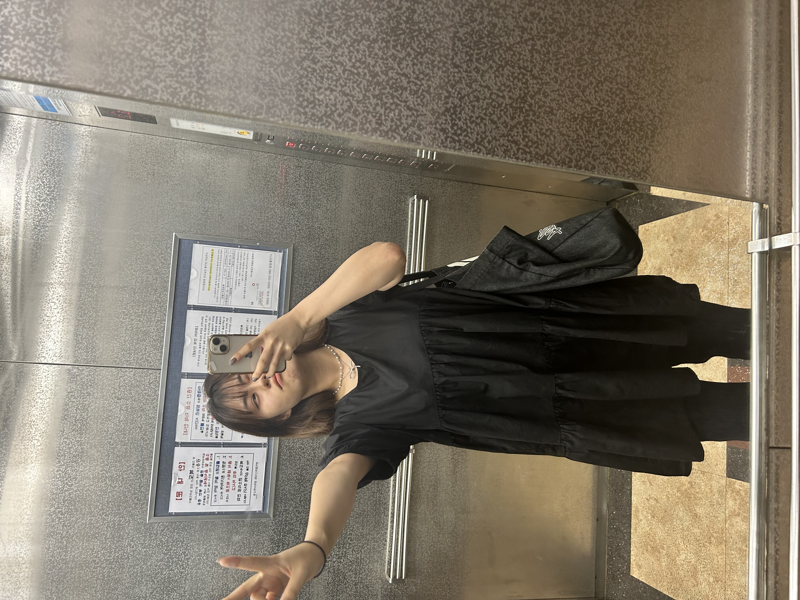

ARCHIVE
Daily Look
Daily Look
at
20
20

black!
[at 32.8] 아직 끝나지 않은 여름, 장마철과 어울리는 블랙룩 :) 사실 그냥 원피스와 팬츠의 조합이지만, 베이돌 원피스라서 악세사리만 잘 매치해 준다면 된다. 하체가 발달한 체형이라면 추천하는 팬츠 받쳐입기!!! 그래서 숏해서 부담스러워도, 디자인이 예쁘다면 구매하는 편이다. 언젠가 개말라 인간이 된다면 그냥도 입을 수 있을 것이고.. 아니라면 내게는 수많은 팬츠들이 있으니 :)
[at 32.8] 아직 끝나지 않은 여름, 장마철과 어울리는 블랙룩 :) 사실 그냥 원피스와 팬츠의 조합이지만, 베이돌 원피스라서 악세사리만 잘 매치해 준다면 된다. 하체가 발달한 체형이라면 추천하는 팬츠 받쳐입기!!! 그래서 숏해서 부담스러워도, 디자인이 예쁘다면 구매하는 편이다. 언젠가 개말라 인간이 된다면 그냥도 입을 수 있을 것이고.. 아니라면 내게는 수많은 팬츠들이 있으니 :)
color